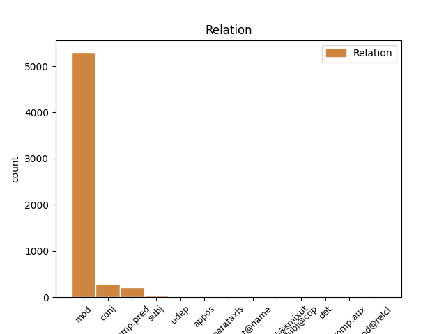
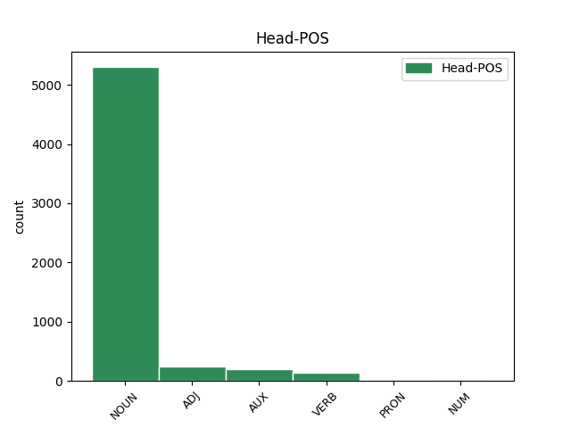
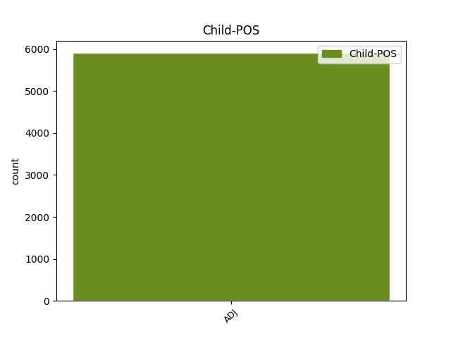

Distribution of features within this leaf



Agreement Rules sorted by frequency.
- When the dependent token is the modifer(mod) of the head token, and the dependent token is ADJ.
1 ל _ _ _ _ 0 _ _ _
2 גליל _ _ _ _ 0 _ _ _
3 לא _ _ _ _ 0 _ _ _
4 היתה _ _ _ _ 0 _ _ _
5 תשובה _ _ _ _ 0 _ _ _
6 ל _ _ _ _ 0 _ _ _
7 ה_ _ _ _ _ 0 _ _ _
8 יכולת _ _ _ _ 0 _ _ _
9 ה _ _ _ _ 0 _ _ _
10 אישית _ _ _ _ 0 _ _ _
11 ה _ _ _ _ 0 _ _ _
12 גבוהה _ _ _ _ 0 _ _ _
13 של _ _ _ _ 0 _ _ _
14 פירסון _ _ _ _ 0 _ _ _
15 , _ _ _ _ 0 _ _ _
16 ש _ _ _ _ 0 _ _ _
17 קלע _ _ _ _ 0 _ _ _
18 33 _ _ _ _ 0 _ _ _
19 נקודות _ _ _ _ 0 _ _ _
20 ו _ _ _ _ 0 _ _ _
21 ריכז _ _ _ _ 0 _ _ _
22 את _ _ _ _ 0 _ _ _
23 משחק _ _ _ _ 0 _ _ _
24 קבוצה_ _ _ _ _ 0 _ _ _
25 _של_ _ _ _ _ 0 _ _ _
26 _הוא _ _ _ _ 0 _ _ _
27 במשך _ _ _ _ 0 _ _ _
28 דקות דקה NOUN NOUN Gender=Fem|Number=Plur 0 _ _ _
29 רבות רב ADJ ADJ Gender=Fem|Number=Plur 28 mod _ SpaceAfter=No
30 . _ _ _ _ 0 _ _ _
1 מה _ _ _ _ 0 _ _ _
2 ש _ _ _ _ 0 _ _ _
3 אמור _ _ _ _ 0 _ _ _
4 היה _ _ _ _ 0 _ _ _
5 להיות _ _ _ _ 0 _ _ _
6 מאבק _ _ _ _ 0 _ _ _
7 צמרת _ _ _ _ 0 _ _ _
8 שקול _ _ _ _ 0 _ _ _
9 , _ _ _ _ 0 _ _ _
10 הפך _ _ _ _ 0 _ _ _
11 במהרה _ _ _ _ 0 _ _ _
12 ל _ _ _ _ 0 _ _ _
13 מיפגן _ _ _ _ 0 _ _ _
14 חד _ _ _ _ 0 _ _ _
15 - _ _ _ _ 0 _ _ _
16 סיטרי _ _ _ _ 0 _ _ _
17 , _ _ _ _ 0 _ _ _
18 בעקבות _ _ _ _ 0 _ _ _
19 משחק _ _ _ _ 0 _ _ _
20 שובה _ VERB VERB Definite=Cons|Gender=Masc|HebBinyan=PAAL|Number=Sing|Person=1,2,3|VerbForm=Part|Voice=Act 0 _ _ _
21 עין _ _ _ _ 0 _ _ _
22 ו _ _ _ _ 0 _ _ _
23 תכליתי תכליתי ADJ ADJ Gender=Masc|Number=Sing 20 conj _ _
24 של _ _ _ _ 0 _ _ _
25 מכבי _ _ _ _ 0 _ _ _
26 ראשל"ץ _ _ _ _ 0 _ _ _
27 ש _ _ _ _ 0 _ _ _
28 ניצח _ _ _ _ 0 _ _ _
29 ללא _ _ _ _ 0 _ _ _
30 מאמץ _ _ _ _ 0 _ _ _
31 09 _ _ _ _ 0 _ _ _
32 931 _ _ _ _ 0 _ _ _
33 . _ _ _ _ 0 _ _ _
1 מיקי _ _ _ _ 0 _ _ _
2 ברקוביץ _ _ _ _ 0 _ _ _
3 היה _ AUX AUX Gender=Masc|Number=Sing|Person=3|Polarity=Pos|Tense=Past|VerbType=Cop 0 _ _ _
4 נהדר נהדר ADJ ADJ Gender=Masc|Number=Sing 3 comp:pred _ _
5 ו _ _ _ _ 0 _ _ _
6 סחף _ _ _ _ 0 _ _ _
7 את _ _ _ _ 0 _ _ _
8 ראשון _ _ _ _ 0 _ _ _
9 ל _ _ _ _ 0 _ _ _
10 ציון _ _ _ _ 0 _ _ _
11 ל _ _ _ _ 0 _ _ _
12 ה_ _ _ _ _ 0 _ _ _
13 ניצחון _ _ _ _ 0 _ _ _
14 ה _ _ _ _ 0 _ _ _
15 גדול _ _ _ _ 0 _ _ _
16 . _ _ _ _ 0 _ _ _
1 אחרים אחר ADJ ADJ Gender=Masc|Number=Plur 8 subj _ _
2 ב _ _ _ _ 0 _ _ _
3 ה_ _ _ _ _ 0 _ _ _
4 תנועה _ _ _ _ 0 _ _ _
5 ה _ _ _ _ 0 _ _ _
6 קיבוצית _ _ _ _ 0 _ _ _
7 אינם _ _ _ _ 0 _ _ _
8 מאמינים האמין VERB VERB Gender=Masc|HebBinyan=HIFIL|Number=Plur|Person=1,2,3|VerbForm=Part|Voice=Act 0 _ _ _
9 ב _ _ _ _ 0 _ _ _
10 כוח_ _ _ _ _ 0 _ _ _
11 _של_ _ _ _ _ 0 _ _ _
12 _הם _ _ _ _ 0 _ _ _
13 להביא _ _ _ _ 0 _ _ _
14 אל_ _ _ _ _ 0 _ _ _
15 _הם _ _ _ _ 0 _ _ _
16 עולים _ _ _ _ 0 _ _ _
17 מ _ _ _ _ 0 _ _ _
18 רצון _ _ _ _ 0 _ _ _
19 . _ _ _ _ 0 _ _ _
1 וולסטון _ _ _ _ 0 _ _ _
2 הוסיף _ _ _ _ 0 _ _ _
3 : _ _ _ _ 0 _ _ _
4 " _ _ _ _ 0 _ _ _
5 ב _ _ _ _ 0 _ _ _
6 אותה _ _ _ _ 0 _ _ _
7 מידה _ _ _ _ 0 _ _ _
8 , _ _ _ _ 0 _ _ _
9 מתוך _ _ _ _ 0 _ _ _
10 אהבת _ _ _ _ 0 _ _ _
11 ישראל _ _ _ _ 0 _ _ _
12 , _ _ _ _ 0 _ _ _
13 יכול _ AUX AUX Gender=Masc|Number=Sing|Person=1,2,3|VerbForm=Part|VerbType=Mod 0 _ _ _
14 אדם _ _ _ _ 0 _ _ _
15 להיות _ _ _ _ 0 _ _ _
16 ביקורתי ביקורתי ADJ ADJ Gender=Masc|Number=Sing 13 udep _ _
17 כלפי _ _ _ _ 0 _ _ _
18 ממשלה _ _ _ _ 0 _ _ _
19 מסוימת _ _ _ _ 0 _ _ _
20 ו _ _ _ _ 0 _ _ _
21 אני _ _ _ _ 0 _ _ _
22 אמנם _ _ _ _ 0 _ _ _
23 הייתי _ _ _ _ 0 _ _ _
24 ביקורתי _ _ _ _ 0 _ _ _
25 על _ _ _ _ 0 _ _ _
26 מפלגת _ _ _ _ 0 _ _ _
27 ה _ _ _ _ 0 _ _ _
28 ליכוד _ _ _ _ 0 _ _ _
29 ב _ _ _ _ 0 _ _ _
30 ישראל _ _ _ _ 0 _ _ _
31 , _ _ _ _ 0 _ _ _
32 ש _ _ _ _ 0 _ _ _
33 אותו_ _ _ _ _ 0 _ _ _
34 _היא _ _ _ _ 0 _ _ _
35 אני _ _ _ _ 0 _ _ _
36 חושב _ _ _ _ 0 _ _ _
37 ל _ _ _ _ 0 _ _ _
38 ממשלה _ _ _ _ 0 _ _ _
39 ימנית _ _ _ _ 0 _ _ _
40 . _ _ _ _ 0 _ _ _
1 דוברת _ _ _ _ 0 _ _ _
2 קופת _ _ _ _ 0 _ _ _
3 חולים _ _ _ _ 0 _ _ _
4 ב _ _ _ _ 0 _ _ _
5 חיפה _ _ _ _ 0 _ _ _
6 ו _ _ _ _ 0 _ _ _
7 ה _ _ _ _ 0 _ _ _
8 צפון _ _ _ _ 0 _ _ _
9 יוכי _ _ _ _ 0 _ _ _
10 באואר _ _ _ _ 0 _ _ _
11 מסרה _ _ _ _ 0 _ _ _
12 כי _ _ _ _ 0 _ _ _
13 קופת קופה NOUN NOUN Definite=Cons|Gender=Fem|Number=Sing 0 _ _ _
14 חולים _ _ _ _ 0 _ _ _
15 ה _ _ _ _ 0 _ _ _
16 כללית כללי ADJ ADJ Gender=Fem|Number=Sing 13 appos _ _
17 פיטרה _ _ _ _ 0 _ _ _
18 את _ _ _ _ 0 _ _ _
19 פרוף _ _ _ _ 0 _ _ _
20 מרין _ _ _ _ 0 _ _ _
21 מכיוון _ _ _ _ 0 _ _ _
22 ש _ _ _ _ 0 _ _ _
23 ביצע _ _ _ _ 0 _ _ _
24 ניתוחים _ _ _ _ 0 _ _ _
25 פרטיים _ _ _ _ 0 _ _ _
26 בניגוד _ _ _ _ 0 _ _ _
27 ל _ _ _ _ 0 _ _ _
28 הסכם _ _ _ _ 0 _ _ _
29 מפורש _ _ _ _ 0 _ _ _
30 עם_ _ _ _ _ 0 _ _ _
31 _הוא _ _ _ _ 0 _ _ _
32 . _ _ _ _ 0 _ _ _
1 חשוב חשוב ADJ ADJ Gender=Masc|Number=Sing 5 parataxis _ _
2 מ _ _ _ _ 0 _ _ _
3 זה _ _ _ _ 0 _ _ _
4 : _ _ _ _ 0 _ _ _
5 מדובר דובר VERB VERB Gender=Masc|HebBinyan=PUAL|Number=Sing|Person=1,2,3|VerbForm=Part|Voice=Pass 0 _ _ _
6 ב _ _ _ _ 0 _ _ _
7 צעד _ _ _ _ 0 _ _ _
8 ראשון _ _ _ _ 0 _ _ _
9 לקראת _ _ _ _ 0 _ _ _
10 רפורמה _ _ _ _ 0 _ _ _
11 כללית _ _ _ _ 0 _ _ _
12 ב _ _ _ _ 0 _ _ _
13 ה_ _ _ _ _ 0 _ _ _
14 השכלה _ _ _ _ 0 _ _ _
15 ה _ _ _ _ 0 _ _ _
16 גבוהה _ _ _ _ 0 _ _ _
17 , _ _ _ _ 0 _ _ _
18 ש _ _ _ _ 0 _ _ _
19 תבטיח _ _ _ _ 0 _ _ _
20 , _ _ _ _ 0 _ _ _
21 בין _ _ _ _ 0 _ _ _
22 ה _ _ _ _ 0 _ _ _
23 שאר _ _ _ _ 0 _ _ _
24 , _ _ _ _ 0 _ _ _
25 לימודי _ _ _ _ 0 _ _ _
26 תואר _ _ _ _ 0 _ _ _
27 ראשון _ _ _ _ 0 _ _ _
28 ל _ _ _ _ 0 _ _ _
29 כל _ _ _ _ 0 _ _ _
30 עולה _ _ _ _ 0 _ _ _
31 ו _ _ _ _ 0 _ _ _
32 ל _ _ _ _ 0 _ _ _
33 כל _ _ _ _ 0 _ _ _
34 ישראלי _ _ _ _ 0 _ _ _
35 בעל _ _ _ _ 0 _ _ _
36 תעודת _ _ _ _ 0 _ _ _
37 בגרות _ _ _ _ 0 _ _ _
38 . _ _ _ _ 0 _ _ _
1 ב _ _ _ _ 0 _ _ _
2 ה_ _ _ _ _ 0 _ _ _
3 קאסבה _ _ _ _ 0 _ _ _
4 של _ _ _ _ 0 _ _ _
5 שכם _ _ _ _ 0 _ _ _
6 היתה _ _ _ _ 0 _ _ _
7 אתמול _ _ _ _ 0 _ _ _
8 תהלוכה _ _ _ _ 0 _ _ _
9 של _ _ _ _ 0 _ _ _
10 תומכי _ _ _ _ 0 _ _ _
11 ה _ _ _ _ 0 _ _ _
12 חזית חזית NOUN NOUN Gender=Fem|Number=Sing 0 _ _ _
13 ה _ _ _ _ 0 _ _ _
14 עממית עממי ADJ ADJ Gender=Fem|Number=Sing 12 flat@name _ _
15 ל _ _ _ _ 0 _ _ _
16 שחרור _ _ _ _ 0 _ _ _
17 פלשתין _ _ _ _ 0 _ _ _
18 ל _ _ _ _ 0 _ _ _
19 ציון _ _ _ _ 0 _ _ _
20 שנה _ _ _ _ 0 _ _ _
21 ל _ _ _ _ 0 _ _ _
22 תפישת _ _ _ _ 0 _ _ _
23 חוליית _ _ _ _ 0 _ _ _
24 " _ _ _ _ 0 _ _ _
25 ה _ _ _ _ 0 _ _ _
26 נשר _ _ _ _ 0 _ _ _
27 ה _ _ _ _ 0 _ _ _
28 אדום _ _ _ _ 0 _ _ _
29 " _ _ _ _ 0 _ _ _
30 ב _ _ _ _ 0 _ _ _
31 שכם _ _ _ _ 0 _ _ _
32 ו _ _ _ _ 0 _ _ _
33 ל _ _ _ _ 0 _ _ _
34 מוות_ _ _ _ _ 0 _ _ _
35 _של_ _ _ _ _ 0 _ _ _
36 _הוא _ _ _ _ 0 _ _ _
37 של _ _ _ _ 0 _ _ _
38 ראש _ _ _ _ 0 _ _ _
39 ה _ _ _ _ 0 _ _ _
40 חוליה _ _ _ _ 0 _ _ _
41 , _ _ _ _ 0 _ _ _
42 איימן _ _ _ _ 0 _ _ _
43 רוזה _ _ _ _ 0 _ _ _
44 . _ _ _ _ 0 _ _ _
1 26 _ _ _ _ 0 _ _ _
2 ש"ח _ _ _ _ 0 _ _ _
3 הרכבה _ _ _ _ 0 _ _ _
4 31 _ _ _ _ 0 _ _ _
5 ש"ח _ _ _ _ 0 _ _ _
6 סה"ך _ _ _ _ 0 _ _ _
7 57 _ _ _ _ 0 _ _ _
8 ש"ח _ _ _ _ 0 _ _ _
9 ל _ _ _ _ 0 _ _ _
10 דלת _ _ _ _ 0 _ _ _
11 מורכבת _ _ _ _ 0 _ _ _
12 עלות _ _ _ _ 0 _ _ _
13 חידוש_ _ _ _ _ 0 _ _ _
14 _של_ _ _ _ _ 0 _ _ _
15 _הוא _ _ _ _ 0 _ _ _
16 של _ _ _ _ 0 _ _ _
17 מטבח _ _ _ _ 0 _ _ _
18 בן _ _ _ _ 0 _ _ _
19 01 _ _ _ _ 0 _ _ _
20 דלתות _ _ _ _ 0 _ _ _
21 ( _ _ _ _ 0 _ _ _
22 כ _ _ _ _ 0 _ _ _
23 01 _ _ _ _ 0 _ _ _
24 מטרים _ _ _ _ 0 _ _ _
25 ) _ _ _ _ 0 _ _ _
26 ב _ _ _ _ 0 _ _ _
27 דלתות _ _ _ _ 0 _ _ _
28 תגיע _ _ _ _ 0 _ _ _
29 ל _ _ _ _ 0 _ _ _
30 - _ _ _ _ 0 _ _ _
31 1,875 _ _ _ _ 0 _ _ _
32 ש"ח _ _ _ _ 0 _ _ _
33 , _ _ _ _ 0 _ _ _
34 בלא _ _ _ _ 0 _ _ _
35 ה _ _ _ _ 0 _ _ _
36 לכלוך _ _ _ _ 0 _ _ _
37 ה _ _ _ _ 0 _ _ _
38 נלווה _ _ _ _ 0 _ _ _
39 ל _ _ _ _ 0 _ _ _
40 פירוק _ _ _ _ 0 _ _ _
41 מטבח _ _ _ _ 0 _ _ _
42 ישן _ _ _ _ 0 _ _ _
43 ו _ _ _ _ 0 _ _ _
44 התקנת התקנה NOUN NOUN Definite=Cons|Gender=Fem|Number=Sing 0 _ _ _
45 חדש חדש ADJ ADJ Gender=Masc|Number=Sing 44 compound@smixut _ SpaceAfter=No
46 . _ _ _ _ 0 _ _ _
1 ה _ _ _ _ 0 _ _ _
2 מוזר מוזר ADJ ADJ Gender=Masc|Number=Sing 3 subj@cop _ _
3 הוא הוא AUX AUX Gender=Masc|Number=Sing|Person=3|Polarity=Pos|VerbForm=Part|VerbType=Cop 0 _ _ _
4 , _ _ _ _ 0 _ _ _
5 ש _ _ _ _ 0 _ _ _
6 אותו _ _ _ _ 0 _ _ _
7 בנק _ _ _ _ 0 _ _ _
8 לאומי _ _ _ _ 0 _ _ _
9 ( _ _ _ _ 0 _ _ _
10 כמו_ _ _ _ _ 0 _ _ _
11 _הוא _ _ _ _ 0 _ _ _
12 כ _ _ _ _ 0 _ _ _
13 בנק _ _ _ _ 0 _ _ _
14 מזרחי _ _ _ _ 0 _ _ _
15 ) _ _ _ _ 0 _ _ _
16 מציע _ _ _ _ 0 _ _ _
17 ל _ _ _ _ 0 _ _ _
18 ה_ _ _ _ _ 0 _ _ _
19 חוסך _ _ _ _ 0 _ _ _
20 תוכנית _ _ _ _ 0 _ _ _
21 צמודת _ _ _ _ 0 _ _ _
22 - _ _ _ _ 0 _ _ _
23 מדד _ _ _ _ 0 _ _ _
24 ש _ _ _ _ 0 _ _ _
25 ב_ _ _ _ _ 0 _ _ _
26 _היא _ _ _ _ 0 _ _ _
27 הפסד _ _ _ _ 0 _ _ _
28 מדד _ _ _ _ 0 _ _ _
29 , _ _ _ _ 0 _ _ _
30 אך _ _ _ _ 0 _ _ _
31 בלי _ _ _ _ 0 _ _ _
32 ש _ _ _ _ 0 _ _ _
33 ייהנה _ _ _ _ 0 _ _ _
34 מ _ _ _ _ 0 _ _ _
35 ה _ _ _ _ 0 _ _ _
36 תנאים _ _ _ _ 0 _ _ _
37 ה _ _ _ _ 0 _ _ _
38 ניתנים _ _ _ _ 0 _ _ _
39 ל _ _ _ _ 0 _ _ _
40 חוסכים _ _ _ _ 0 _ _ _
41 ותיקים _ _ _ _ 0 _ _ _
42 בלבד _ _ _ _ 0 _ _ _
43 " _ _ _ _ 0 _ _ _
44 , _ _ _ _ 0 _ _ _
45 כלומר _ _ _ _ 0 _ _ _
46 הקדמת _ _ _ _ 0 _ _ _
47 מועדים _ _ _ _ 0 _ _ _
48 ב _ _ _ _ 0 _ _ _
49 שנה _ _ _ _ 0 _ _ _
50 אחת _ _ _ _ 0 _ _ _
51 . _ _ _ _ 0 _ _ _
1 דמות _ _ _ _ 0 _ _ _
2 ש _ _ _ _ 0 _ _ _
3 הפכה הפך VERB VERB Gender=Fem|Number=Sing|Person=3|Tense=Past 0 _ _ _
4 מיתית מיתי ADJ ADJ Gender=Fem|Number=Sing 3 comp:aux _ _
5 ו _ _ _ _ 0 _ _ _
6 עטופת _ _ _ _ 0 _ _ _
7 מסתורין _ _ _ _ 0 _ _ _
8 " _ _ _ _ 0 _ _ _
9 קו _ _ _ _ 0 _ _ _
10 דק _ _ _ _ 0 _ _ _
11 בין _ _ _ _ 0 _ _ _
12 מציאות _ _ _ _ 0 _ _ _
13 ל _ _ _ _ 0 _ _ _
14 ספרות _ _ _ _ 0 _ _ _
15 " _ _ _ _ 0 _ _ _
16 . _ _ _ _ 0 _ _ _
1 ל _ _ _ _ 0 _ _ _
2 אחדים אחדים ADJ ADJ Gender=Masc|Number=Plur 4 det _ _
3 מאת_ _ _ _ _ 0 _ _ _
4 _אנחנו הוא PRON PRON Gender=Fem,Masc|Number=Plur|Person=1|PronType=Prs 0 _ _ _
5 זה _ _ _ _ 0 _ _ _
6 קורה _ _ _ _ 0 _ _ _
7 ב _ _ _ _ 0 _ _ _
8 קביעות _ _ _ _ 0 _ _ _
9 . _ _ _ _ 0 _ _ _
1 ה _ _ _ _ 0 _ _ _
2 חבורה _ _ _ _ 0 _ _ _
3 מורכבת _ _ _ _ 0 _ _ _
4 מ _ _ _ _ 0 _ _ _
5 ארבעה _ _ _ _ 0 _ _ _
6 גברים גבר NOUN NOUN Gender=Masc|Number=Plur 0 _ _ _
7 ו _ _ _ _ 0 _ _ _
8 שתי _ _ _ _ 0 _ _ _
9 נשים _ _ _ _ 0 _ _ _
10 , _ _ _ _ 0 _ _ _
11 כולם _ _ _ _ 0 _ _ _
12 צעירים צעיר ADJ ADJ Gender=Masc|Number=Plur 6 mod@relcl _ _
13 ו _ _ _ _ 0 _ _ _
14 סימפאטים _ _ _ _ 0 _ _ _
15 ו _ _ _ _ 0 _ _ _
16 כולם _ _ _ _ 0 _ _ _
17 אנשי _ _ _ _ 0 _ _ _
18 תיאטרון _ _ _ _ 0 _ _ _
19 , _ _ _ _ 0 _ _ _
20 עובדה _ _ _ _ 0 _ _ _
21 ה _ _ _ _ 0 _ _ _
22 מעניקה _ _ _ _ 0 _ _ _
23 צידוק _ _ _ _ 0 _ _ _
24 ל _ _ _ _ 0 _ _ _
25 ה_ _ _ _ _ 0 _ _ _
26 צביון _ _ _ _ 0 _ _ _
27 ה _ _ _ _ 0 _ _ _
28 תיאטרלי _ _ _ _ 0 _ _ _
29 של _ _ _ _ 0 _ _ _
30 ה _ _ _ _ 0 _ _ _
31 עיבוד _ _ _ _ 0 _ _ _
32 . _ _ _ _ 0 _ _ _
Disagree Examples:
1 סופר _ _ _ _ 0 _ _ _
2 " _ _ _ _ 0 _ _ _
3 ה _ _ _ _ 0 _ _ _
4 ארץ _ _ _ _ 0 _ _ _
5 " _ _ _ _ 0 _ _ _
6 ב _ _ _ _ 0 _ _ _
7 ה_ _ _ _ _ 0 _ _ _
8 צפון _ _ _ _ 0 _ _ _
9 , _ _ _ _ 0 _ _ _
10 מוסיף _ _ _ _ 0 _ _ _
11 : _ _ _ _ 0 _ _ _
12 יריות _ _ _ _ 0 _ _ _
13 נשמעו נשמע VERB VERB Gender=Fem,Masc|HebBinyan=NIFAL|Number=Plur|Person=3|Tense=Past|Voice=Mid 0 _ _ _
14 אתמול _ _ _ _ 0 _ _ _
15 ב _ _ _ _ 0 _ _ _
16 שעה _ _ _ _ 0 _ _ _
17 2000 _ _ _ _ 0 _ _ _
18 ב _ _ _ _ 0 _ _ _
19 ה_ _ _ _ _ 0 _ _ _
20 ערב _ _ _ _ 0 _ _ _
21 ב _ _ _ _ 0 _ _ _
22 שפרעם _ _ _ _ 0 _ _ _
23 , _ _ _ _ 0 _ _ _
24 סמוך סמוך ADJ ADJ Gender=Masc|Number=Sing 13 mod _ _
25 ל _ _ _ _ 0 _ _ _
26 בית_ _ _ _ _ 0 _ _ _
27 _של_ _ _ _ _ 0 _ _ _
28 _הוא _ _ _ _ 0 _ _ _
29 של _ _ _ _ 0 _ _ _
30 ראש _ _ _ _ 0 _ _ _
31 ה _ _ _ _ 0 _ _ _
32 עירייה _ _ _ _ 0 _ _ _
33 , _ _ _ _ 0 _ _ _
34 איברהים _ _ _ _ 0 _ _ _
35 נימר _ _ _ _ 0 _ _ _
36 חוסיין _ _ _ _ 0 _ _ _
37 . _ _ _ _ 0 _ _ _
1 קצין _ _ _ _ 0 _ _ _
2 בכיר _ _ _ _ 0 _ _ _
3 הגדיר _ _ _ _ 0 _ _ _
4 את _ _ _ _ 0 _ _ _
5 ה _ _ _ _ 0 _ _ _
6 מתרחש _ _ _ _ 0 _ _ _
7 ב _ _ _ _ 0 _ _ _
8 ה_ _ _ _ _ 0 _ _ _
9 רצועה _ _ _ _ 0 _ _ _
10 ב _ _ _ _ 0 _ _ _
11 ה_ _ _ _ _ 0 _ _ _
12 יומיים יום NOUN NOUN Gender=Masc|Number=Dual 0 _ _ _
13 ה _ _ _ _ 0 _ _ _
14 אחרונים אחרון ADJ ADJ Gender=Masc|Number=Plur 12 mod _ _
15 כ _ _ _ _ 0 _ _ _
16 מלחמה _ _ _ _ 0 _ _ _
17 . _ _ _ _ 0 _ _ _
1 ו _ _ _ _ 0 _ _ _
2 כך _ _ _ _ 0 _ _ _
3 , _ _ _ _ 0 _ _ _
4 ב _ _ _ _ 0 _ _ _
5 ניסיון _ _ _ _ 0 _ _ _
6 לברוח _ _ _ _ 0 _ _ _
7 רחוק _ _ _ _ 0 _ _ _
8 ככל _ _ _ _ 0 _ _ _
9 ה _ _ _ _ 0 _ _ _
10 אפשר _ _ _ _ 0 _ _ _
11 מ _ _ _ _ 0 _ _ _
12 מה _ _ _ _ 0 _ _ _
13 ש _ _ _ _ 0 _ _ _
14 מאוס _ _ _ _ 0 _ _ _
15 על_ _ _ _ _ 0 _ _ _
16 _הם _ _ _ _ 0 _ _ _
17 ב _ _ _ _ 0 _ _ _
18 גוש _ _ _ _ 0 _ _ _
19 אמונים _ _ _ _ 0 _ _ _
20 ו _ _ _ _ 0 _ _ _
21 ב _ _ _ _ 0 _ _ _
22 שאר _ _ _ _ 0 _ _ _
23 פלגי _ _ _ _ 0 _ _ _
24 ה _ _ _ _ 0 _ _ _
25 ימין _ _ _ _ 0 _ _ _
26 , _ _ _ _ 0 _ _ _
27 משתדלים _ _ _ _ 0 _ _ _
28 שגב _ _ _ _ 0 _ _ _
29 ו _ _ _ _ 0 _ _ _
30 דומי_ _ _ _ _ 0 _ _ _
31 _של_ _ _ _ _ 0 _ _ _
32 _הוא _ _ _ _ 0 _ _ _
33 למחוק _ _ _ _ 0 _ _ _
34 כל _ _ _ _ 0 _ _ _
35 בסיס _ _ _ _ 0 _ _ _
36 ל _ _ _ _ 0 _ _ _
37 תרבות _ _ _ _ 0 _ _ _
38 משותפת _ _ _ _ 0 _ _ _
39 , _ _ _ _ 0 _ _ _
40 ל _ _ _ _ 0 _ _ _
41 חוויה _ _ _ _ 0 _ _ _
42 משותפת _ _ _ _ 0 _ _ _
43 , _ _ _ _ 0 _ _ _
44 ל _ _ _ _ 0 _ _ _
45 רגשות _ _ _ _ 0 _ _ _
46 - _ _ _ _ 0 _ _ _
47 תשתית תשתית NOUN NOUN Gender=Fem|Number=Sing 0 _ _ _
48 משותפים משותף ADJ ADJ Gender=Masc|Number=Plur 47 mod _ SpaceAfter=No
49 . _ _ _ _ 0 _ _ _
1 הוא _ _ _ _ 0 _ _ _
2 שואב _ _ _ _ 0 _ _ _
3 את _ _ _ _ 0 _ _ _
4 מרכיב_ _ _ _ _ 0 _ _ _
5 _של_ _ _ _ _ 0 _ _ _
6 _הוא _ _ _ _ 0 _ _ _
7 מ _ _ _ _ 0 _ _ _
8 שני _ _ _ _ 0 _ _ _
9 מקורות מקור NOUN NOUN Gender=Masc|Number=Plur 0 _ _ _
10 : _ _ _ _ 0 _ _ _
11 ה _ _ _ _ 0 _ _ _
12 אחד _ _ _ _ 0 _ _ _
13 לאומי לאומי ADJ ADJ Gender=Masc|Number=Sing 9 appos _ _
14 ו _ _ _ _ 0 _ _ _
15 ה _ _ _ _ 0 _ _ _
16 אחר _ _ _ _ 0 _ _ _
17 דתי _ _ _ _ 0 _ _ _
18 . _ _ _ _ 0 _ _ _
1 פוליטיקאי _ _ _ _ 0 _ _ _
2 חייב חייב AUX AUX Gender=Masc|Number=Sing|Person=1,2,3|VerbType=Mod 0 _ _ _
3 להציג _ _ _ _ 0 _ _ _
4 פתרון _ _ _ _ 0 _ _ _
5 חד _ _ _ _ 0 _ _ _
6 ו _ _ _ _ 0 _ _ _
7 ברור _ _ _ _ 0 _ _ _
8 , _ _ _ _ 0 _ _ _
9 ו _ _ _ _ 0 _ _ _
10 הכל _ _ _ _ 0 _ _ _
11 , _ _ _ _ 0 _ _ _
12 ב _ _ _ _ 0 _ _ _
13 ה_ _ _ _ _ 0 _ _ _
14 ימין _ _ _ _ 0 _ _ _
15 ו _ _ _ _ 0 _ _ _
16 ב _ _ _ _ 0 _ _ _
17 ה_ _ _ _ _ 0 _ _ _
18 שמאל _ _ _ _ 0 _ _ _
19 , _ _ _ _ 0 _ _ _
20 דומים דומה ADJ ADJ Gender=Masc|Number=Plur 2 conj _ _
21 בשל _ _ _ _ 0 _ _ _
22 כך _ _ _ _ 0 _ _ _
23 ב _ _ _ _ 0 _ _ _
24 התנהגות_ _ _ _ _ 0 _ _ _
25 _של_ _ _ _ _ 0 _ _ _
26 _הם _ _ _ _ 0 _ _ _
27 ה _ _ _ _ 0 _ _ _
28 נאיווית _ _ _ _ 0 _ _ _
29 , _ _ _ _ 0 _ _ _
30 ה _ _ _ _ 0 _ _ _
31 מאמינה _ _ _ _ 0 _ _ _
32 ש _ _ _ _ 0 _ _ _
33 אילו _ _ _ _ 0 _ _ _
34 רק _ _ _ _ 0 _ _ _
35 יושמה _ _ _ _ 0 _ _ _
36 ה _ _ _ _ 0 _ _ _
37 הצעה _ _ _ _ 0 _ _ _
38 של _ _ _ _ 0 _ _ _
39 הם _ _ _ _ 0 _ _ _
40 הכל _ _ _ _ 0 _ _ _
41 היה _ _ _ _ 0 _ _ _
42 בא _ _ _ _ 0 _ _ _
43 על _ _ _ _ 0 _ _ _
44 פתרון_ _ _ _ _ 0 _ _ _
45 _של_ _ _ _ _ 0 _ _ _
46 _הוא _ _ _ _ 0 _ _ _
47 . _ _ _ _ 0 _ _ _